CS180, Fall 2026
This project stitches several photos into one wider image. Part A does it by hand. I click matching points between photos, recover the homography that maps one photo onto the other, warp the photos with my own inverse warping code, and blend them into a mosaic.
A homography can only line up two photos if they were taken from the same center of projection, so for every scene I stood in one spot and only rotated the phone, keeping around half of each frame overlapping the next. Each set is three shots (left, center, right) taken within a few seconds of each other on the iPhone 17 Pro Max main camera. Two sets are of the International House courtyard and entrance, and one is the intersection outside it at sunset. The photos are 4284 by 5712, so all the code works on copies scaled down to 2000 pixels on the long side.
I also shot a fourth set from a balcony over the courtyard, but the railing was only about a meter from the phone. Rotating the phone in my hand moved the lens a few centimeters, and that was enough for the railing to shift against the building behind it, so no single homography could line up both. I left that set out.
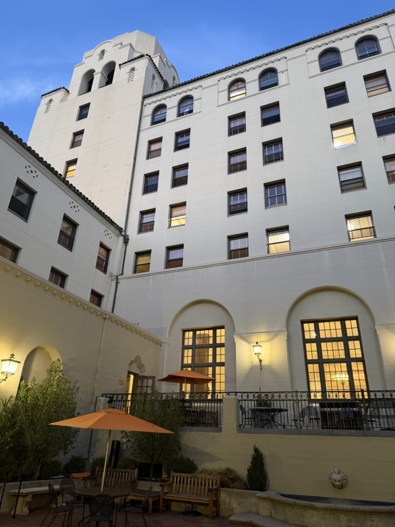
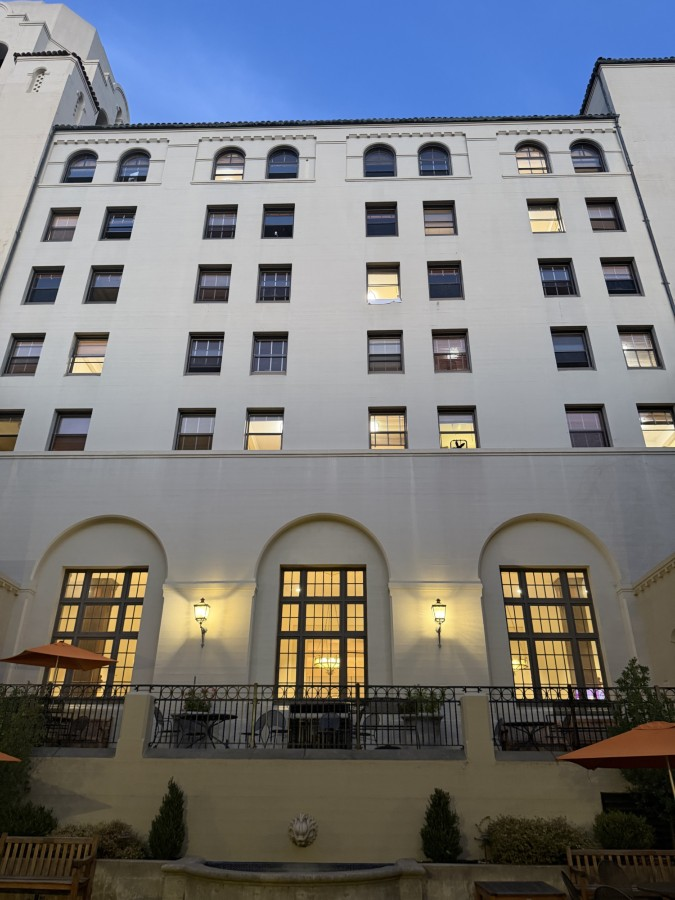
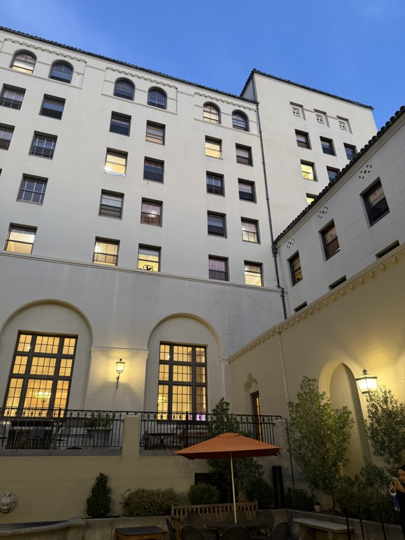
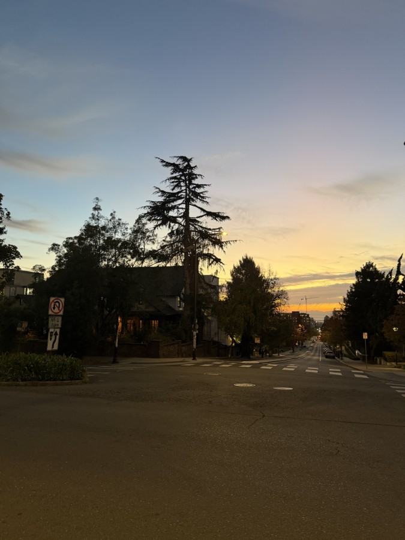
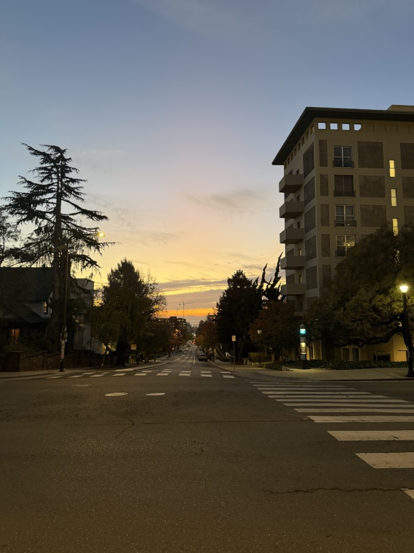
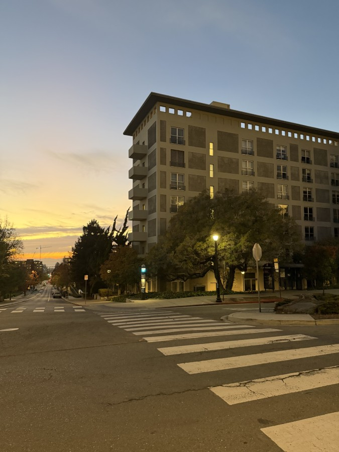
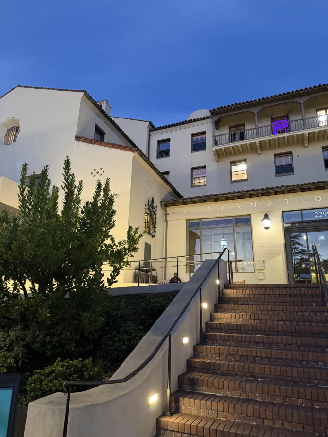
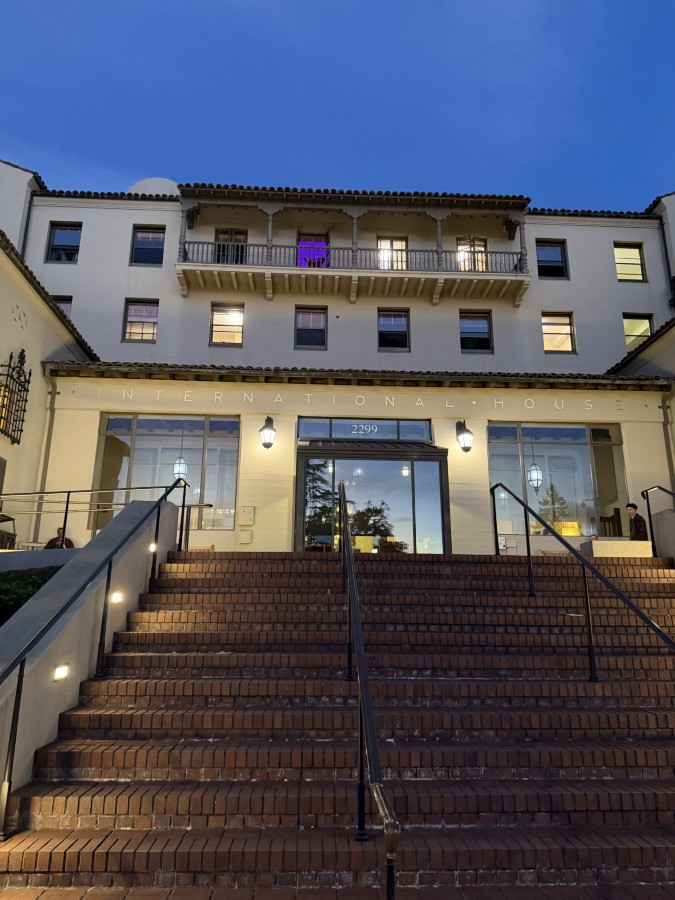
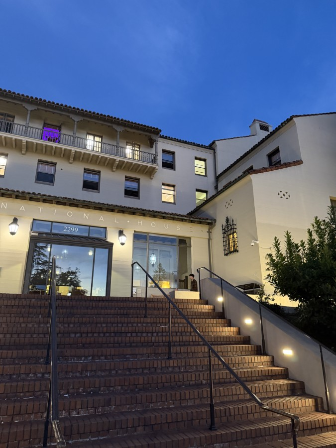
A homography maps a point \(p = (x, y)\) in one image to \(p' = (x', y')\) in the other through homogeneous coordinates, \(p' = Hp\), with \(H\) a \(3 \times 3\) matrix. The overall scale of \(H\) doesn't matter, so I fix the bottom right entry to 1 and that leaves 8 unknowns.
\[\begin{bmatrix} w x' \\ w y' \\ w \end{bmatrix} = \begin{bmatrix} a & b & c \\ d & e & f \\ g & h & 1 \end{bmatrix} \begin{bmatrix} x \\ y \\ 1 \end{bmatrix} \qquad x' = \frac{a x + b y + c}{g x + h y + 1} \qquad y' = \frac{d x + e y + f}{g x + h y + 1}\]Multiplying both sides by the denominator makes each equation linear in the unknowns, so every pair of clicked points gives two rows of a linear system \(A\mathbf{h} = \mathbf{b}\).
\[\begin{bmatrix} x_1 & y_1 & 1 & 0 & 0 & 0 & -x_1 x_1' & -y_1 x_1' \\ 0 & 0 & 0 & x_1 & y_1 & 1 & -x_1 y_1' & -y_1 y_1' \\ \vdots & & & & & & & \vdots \\ x_n & y_n & 1 & 0 & 0 & 0 & -x_n x_n' & -y_n x_n' \\ 0 & 0 & 0 & x_n & y_n & 1 & -x_n y_n' & -y_n y_n' \end{bmatrix} \begin{bmatrix} a \\ b \\ c \\ d \\ e \\ f \\ g \\ h \end{bmatrix} = \begin{bmatrix} x_1' \\ y_1' \\ \vdots \\ x_n' \\ y_n' \end{bmatrix}\]
Four pairs give exactly 8 equations, but a couple of pixels of clicking error then throws \(H\) way off. I
clicked 12 to 18 pairs per image pair instead and solved the overdetermined system with least squares,
\(\min_{\mathbf{h}} \|A\mathbf{h} - \mathbf{b}\|^2\), using np.linalg.lstsq.
def computeH(im1_pts, im2_pts):
#im1_pts and im2_pts are n x 2 arrays of (x, y), returns the H with im2 = H im1
A = []
b = []
for (x, y), (xp, yp) in zip(im1_pts, im2_pts):
A.append([x, y, 1, 0, 0, 0, -x * xp, -y * xp])
A.append([0, 0, 0, x, y, 1, -x * yp, -y * yp])
b.append(xp)
b.append(yp)
#more than 4 points means more equations than unknowns, so solve it with least squares
h = np.linalg.lstsq(np.array(A), np.array(b), rcond=None)[0]
return np.append(h, 1).reshape(3, 3)I wrote a small matplotlib tool for the clicking. It shows both photos side by side, scrolling zooms in around the mouse so each click can land on the exact corner, and the matching points get the same number and color. My first attempt at the courtyard put all 12 points down a single column of windows. The fit looked fine on those points, but a line of points only pins down the image in one direction, so the warp shot off in streaks everywhere else. Spreading the points over the whole overlap, from the roofline down to the fountain, fixed it.
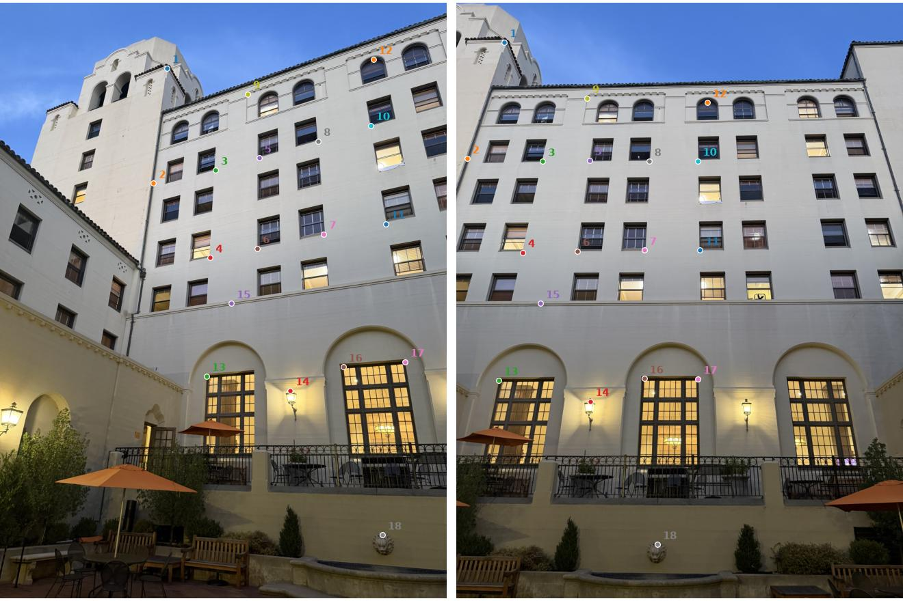
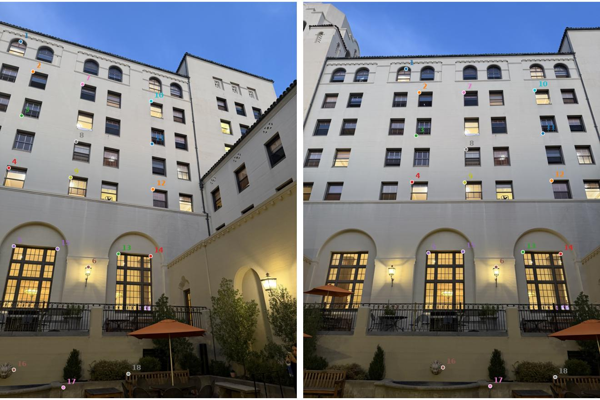
The recovered homography from the left courtyard photo to the center one is below. The \(g\) and \(h\) entries are tiny, but they get multiplied by pixel coordinates in the hundreds, so they are what bends the left photo into a trapezoid. Pushing the 18 clicked points through it, they land 4.0 pixels from where I clicked on average.
\[H_{\text{left}} = \begin{bmatrix} 1.4351 & -0.2084 & -567.59 \\ 0.5153 & 1.2007 & -397.52 \\ 3.40 \times 10^{-4} & -6.25 \times 10^{-5} & 1 \end{bmatrix}\]Both warps use inverse warping. Pushing every input pixel forward through \(H\) would leave holes wherever the image gets stretched, so instead I go over every pixel of the output, send it backward through \(H^{-1}\), and read the color at the point where it lands in the input image. The output size comes from sending the 4 corners of the input through \(H\) and taking their bounding box. That point almost never lands on an exact pixel, which is where the two interpolation methods differ. I treat \((0, 0)\) as the center of the top left pixel.
Output pixels whose source point falls outside the input get nothing. Both functions return an RGBA image whose alpha channel is 1 where the photo landed and 0 elsewhere, which the blending in A.4 uses.
Rectification tests all of this with a single photo. I photographed two framed pictures on a wall at a steep angle, clicked the 4 corners of each frame, and mapped them to a rectangle. To get the rectangle's shape right, I also took a straight-on photo of each frame and measured its width over height from the 4 corners there, 1.21 for the floor plan and 1.35 for the whiteboard. The rectangle's size comes from the frame's longest side in the photo, so no part of the frame gets shrunk. The output is cropped to the frame plus a margin, because the wall itself stretches off toward the horizon.
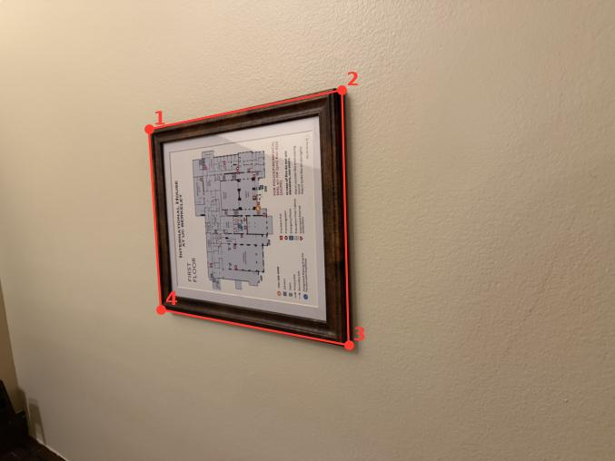
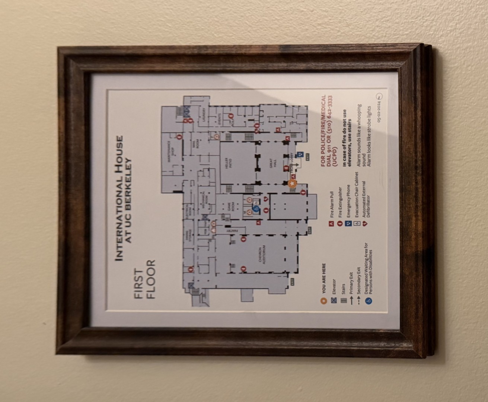
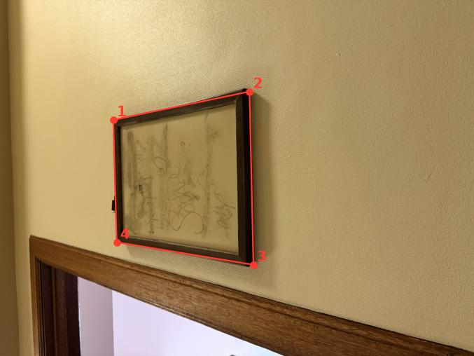
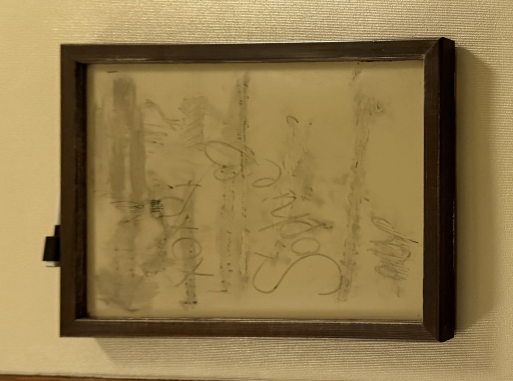
The difference between the two methods is easiest to see up close. Below are the same patches from both results, blown up 4 or 5 times with plain pixel repeats. The far side of each frame had to be stretched about 3 times to become a rectangle, so many output pixels map back to the same few input pixels.
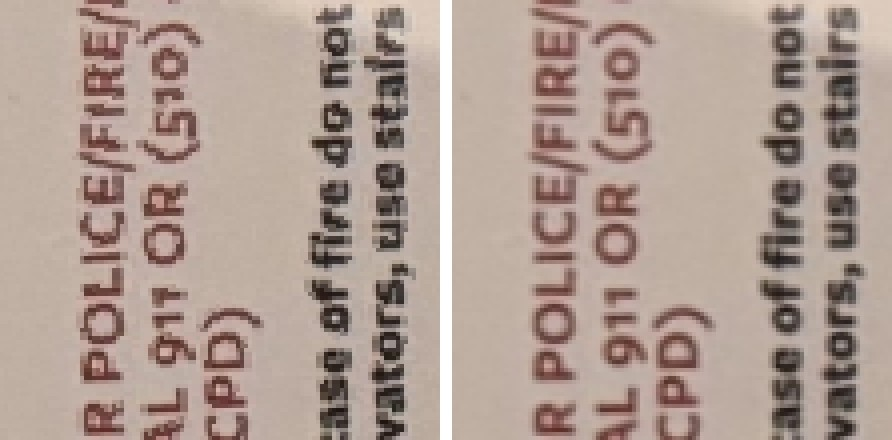
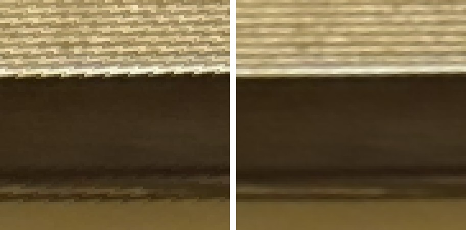
Full results with nearest neighbor and bilinear for the floor plan, and nearest neighbor and bilinear for the whiteboard.
Nearest neighbor took 0.05 seconds on the 1311 by 1080 floor plan output and bilinear took 0.10, and the whiteboard was 0.03 against 0.08. Bilinear does 4 lookups and a weighted sum per pixel instead of 1 lookup, so it is 2 to 3 times slower. Nearest neighbor keeps every pixel exactly as sharp as the input, but anywhere the image is stretched it repeats pixels in blocks and diagonal edges turn into stairs. Bilinear is a little softer since it averages neighbors, but the edges come out clean. Both are fast here because everything is vectorized with numpy, so I used bilinear for the mosaics.
For each scene the center photo stays where it is, and the left and right photos get warped into its projection with their own homographies. The steps are
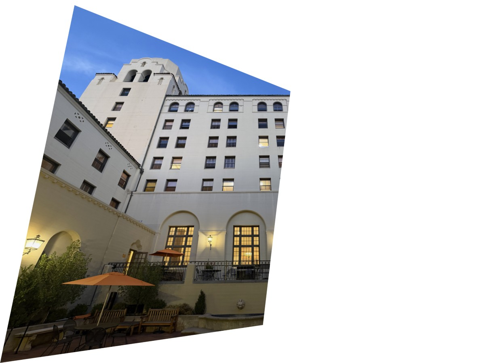
Each layer gets a weight \(w_i\) equal to how far each pixel is from the edge of that photo (the distance transform of its alpha mask), scaled so it is 1 deep inside the photo and falls to 0 at its border. Plain feathering, a weighted average of the layers with these weights, removes hard seams, but anything that is off by a few pixels between photos shows up twice, faintly. So I used a 2 band blend instead. Each layer is split into a blurry low frequency part \(L_i = G_\sigma * I_i\) with \(\sigma = 6\) and a sharp high frequency part \(H_i = I_i - L_i\). The low frequencies get the weighted average, so brightness and color fade smoothly across the seam, and the high frequencies are taken only from the single photo with the biggest weight at each pixel, so edges never get doubled.
\[I_{\text{mosaic}} = \frac{\sum_i w_i\,L_i}{\sum_i w_i} + H_{k}, \qquad k = \arg\max_i\, w_i\]When blurring each layer, I blur the alpha mask the same way and divide by it, so the black empty area outside a photo doesn't leak into its edges.
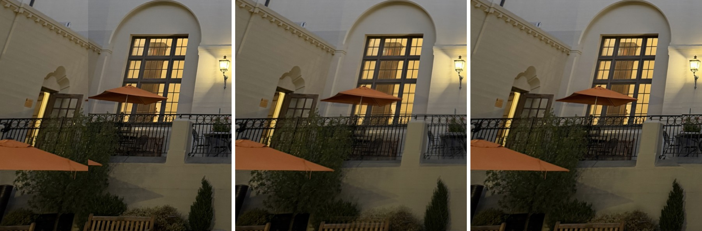
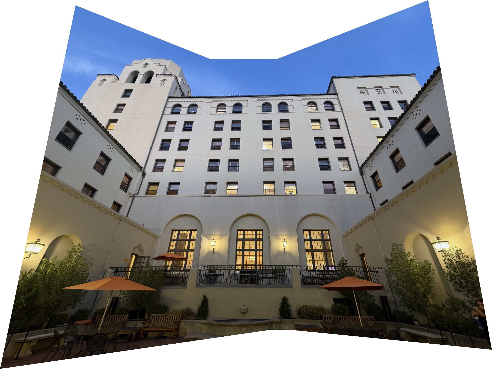
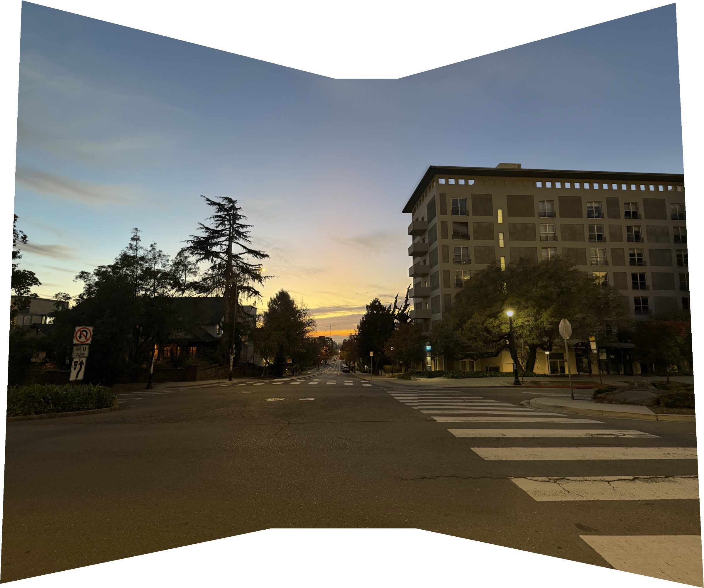
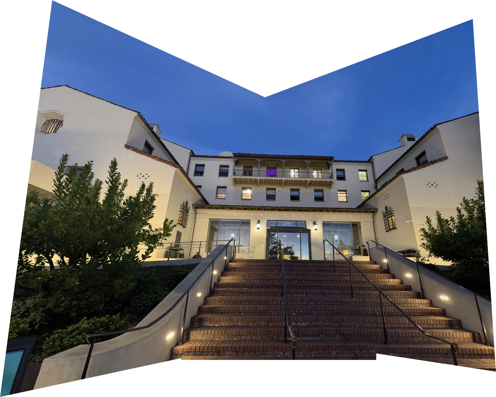
The coolest part was how little it takes. Eight numbers, recovered from a dozen clicks with one least squares solve, are enough to bend one photo so precisely onto another that the seam disappears. The hard part was all in the inputs. The math is only as good as the points, and I learned that the points need to be spread out in both directions, not just accurate, and that a scene only works if everything in it is far enough away that moving the phone slightly doesn't change the view. The balcony set and the bottom steps showed me exactly where the "same center of projection" assumption breaks.